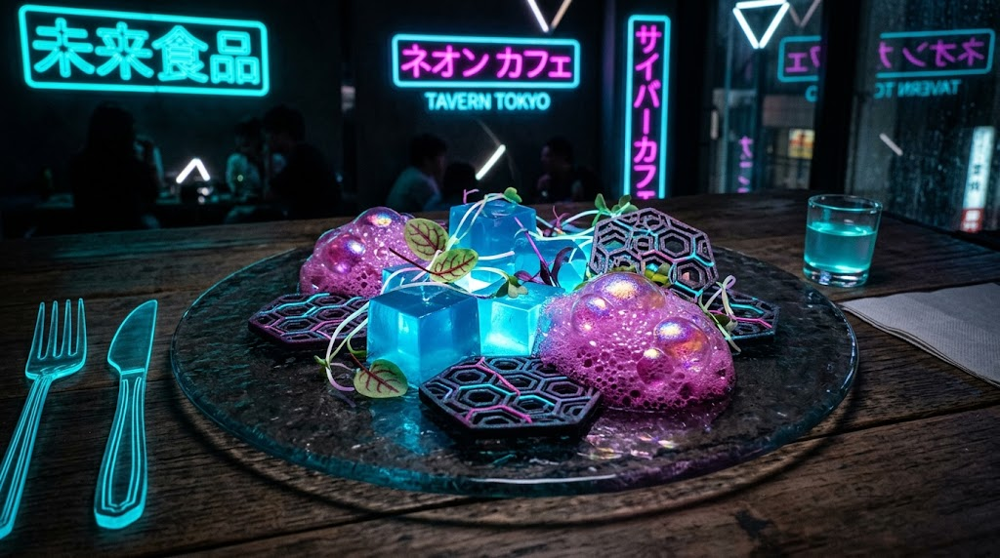

Home
Quantum Neon Synth-Noodles

Description
A staple delicacy in 22nd-century megacities, Quantum Neon Synth-Noodles combine lab-cultured bio-proteins with
glowing bioluminescent algae noodles. Enhanced with citrusy sensory-enhancing foam and crispy lab-grown kelp wafers,
this futuristic dish provides 100% of your daily cellular nutrient requirements in a single visually mesmerizing
meal.
Ingredients
- 200g Bioluminescent spirulina noodles (or glass vermicelli)
- 150g Cultured bio-protein cubes (or firm tofu / seared chicken cubes)
- 1 tbsp Cyber-sesame oil
- 2 tsp Synthetic soy-nano sauce (or tamari sauce)
- 1/2 cup Tonic water with quinine (for UV luminescence effect)
- 1/2 tsp Yuzu juice mixed with lecithin powder (for citrus sensory foam)
- 1 tbsp Dehydrated micro-algae flakes (or crispy nori strips)
- 1 pinch Electric blue spirulina powder
- Edible silver leaf and microgreens for garnish
Instructions
- Cook the bioluminescent spirulina noodles in boiling water with a pinch of blue spirulina powder for 3 minutes
until translucent. Drain and toss with cyber-sesame oil.
- In a sleek induction skillet, sear the cultured bio-protein cubes with synthetic soy-nano sauce until crispy on
the edges.
- Whip the yuzu juice, a splash of tonic water, and lecithin powder using a high-speed aerator (or hand frother)
until a stable, iridescent citrus foam forms.
- Plate the vibrant glowing noodles in a dark translucent glass bowl.
- Top with seared bio-protein cubes, dehydrated micro-algae flakes, and a delicate dollop of yuzu sensory foam.
- Garnish with edible silver leaf and microgreens, then serve under ambient UV lighting for maximum visual impact.